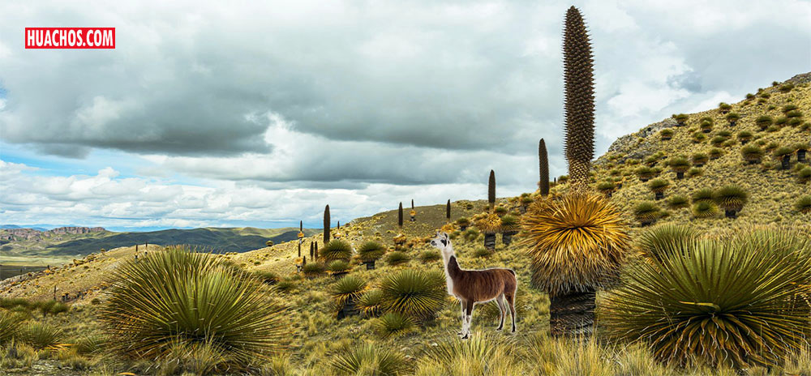
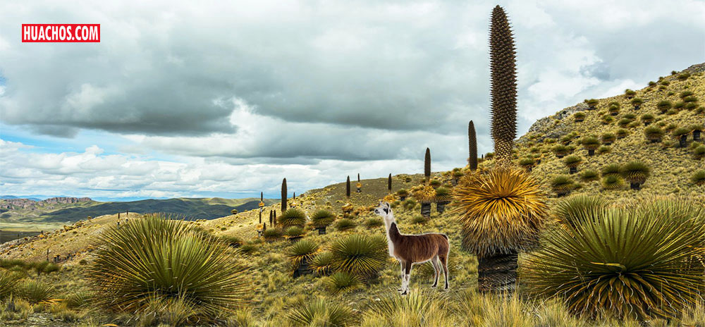

UBICACIÓN
Ubicado a 15 km / 40 min. desde la ciudad de Huancavelica.
Se encuentra al lado Oeste de la ciudad de Huancavelica en el km14 de la vía Huancavelica
- Pisco, con una altitud de 3 878 m.s.n.m. de clima permanente frio, ubicado en el paraje
Ccayarapucro en las faldas del cerro Uchusqaqa,en el margen derecho del Río Ichu, existe
el bosque de puyas de Raymondi conocida como titanca o santon occara, esparcidas en 3 ha
aproximadamente. Según el investigador Antonio Raymondi las puyas florecen dentro de 80 y
100 años, con altura de 8 a 13 m sus flores son preciosas de color blanco crecen en forma de
racimos, su florecimiento dura tres meses y cuando cumple su rol se marchitan de flor a flor
en tres meses, cada planta produce más de seis millones de semillas, la producción de las
plantas es sobre los 4 000 m.s.n.m. son características propias de las regiones Suni y Puna.
 
